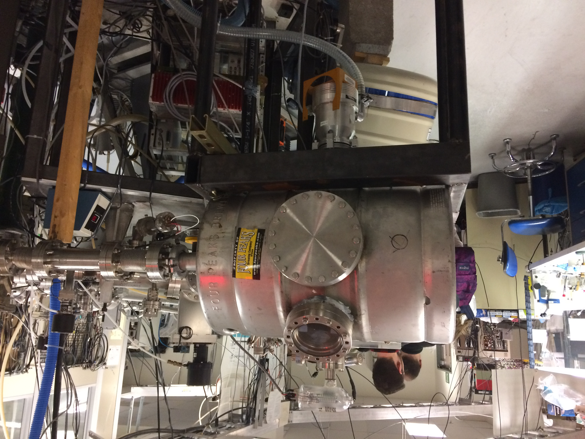
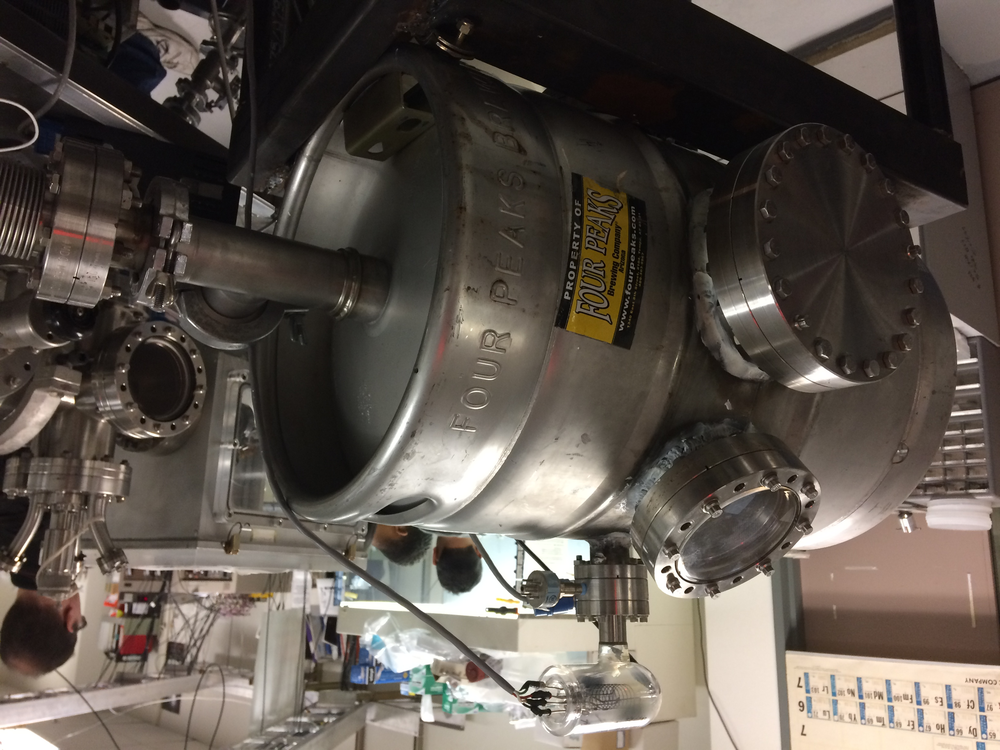
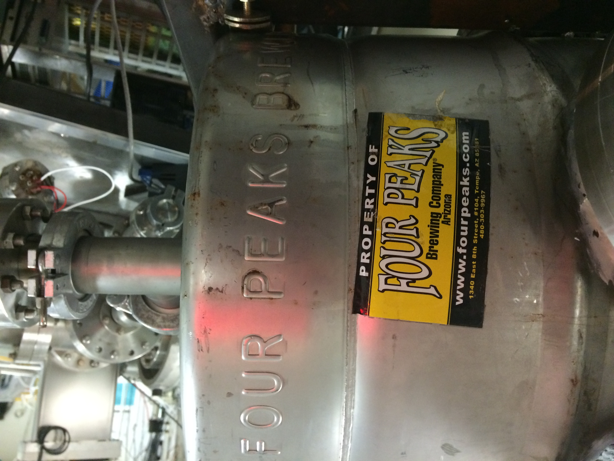
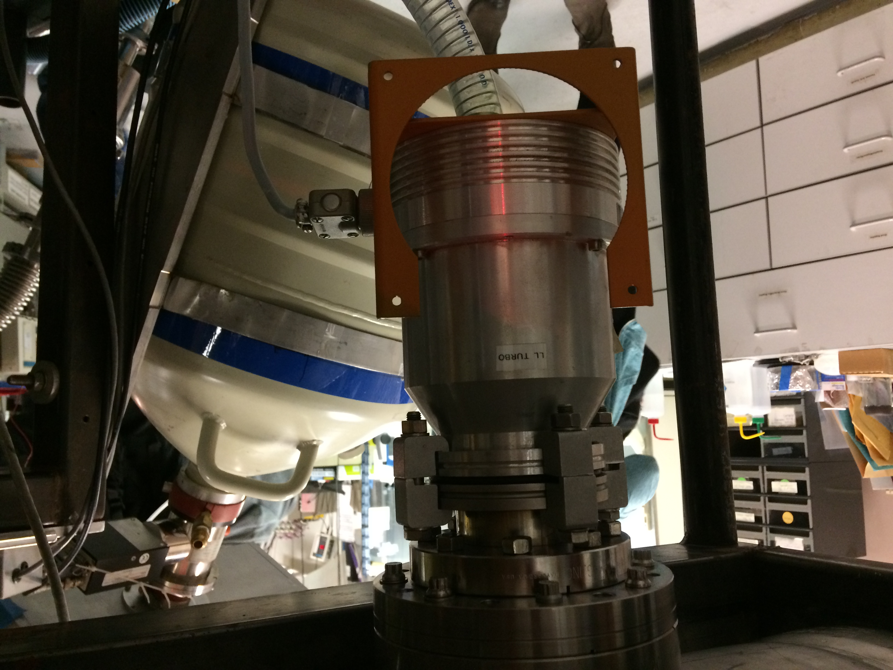

Vacuum chambers of all sizes are usually expensive pieces of equipment and often made as custom orders from large companies that can have extended lead times and complicated shipping costs. An amusing and evidently viable alternative to these normal variety of vacuum chambers is using a beer keg, as wild as that may sound. It turns out that most beer kegs are made of electropolished 304 stainless steel. For various reasons (like its very low concentrations of phosphorus and sulfur), 316 stainless is frequently considered slightly superior to 304 but only with minimal benefits. Because of their low cost and ease of purchase, as well as their extensive interior surface preparation and cleanliness (a necessity of the food contact permitting apparently), beer kegs can make serviceable vacuum chambers; if for nothing else, then just to be used as a quick proof of concept for a system.
This system was attached to one of the alpha particle beam-lines on the ASU General IonX tanetron ion accelerator. The intention of the system was to be a hot gamma source apparently where they were bombarding the surface of a polished molybdenum block with the alpha particles and generating hot gamma rays.
The system was constructed with normal ISO flanges and windows so that it could be attached to other vacuum components without much hassle. The flanges were welded to the keg and then brazed over and covered with Torr Seal epoxy because the thin walls of the Keg are difficult to not form pinholes in when welding for anyone other than an experienced welder. The finishing steps of brazing and Torr Seal coating were done solely to cover over welding pinholes which were causing leaks in the chamber.
After all of the welding and construction was done, the system was fitted with a turbo pump and reached 10-9 torr over a night of pumping.
   